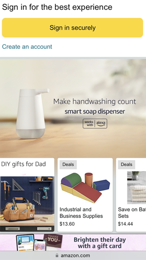

Repetition
DeviantArt

Deviantart is a great example of using repetition on a webpage. All of the artwork that is displayed by the artists are neatly organized. Similarly, all of the profiles along the top are organized in a straight line, repeating one profile after another.
Visual Hirearchy
Amazon
On Amazon's homepage, ther is a great example of visual hirearchy which is used to highlight certain products that are recommended for you. Other products are recommended but are smaller, so your eye is more naturally drawn towards the large picture first, then the smaller ones.
PARC: Conrast
Lush

Throughout all of Lush's pages are examples of popping contrast between products. Black on yellow, black on green, white on black, there are so many beautiful color combinations that provides a lot of contrast.